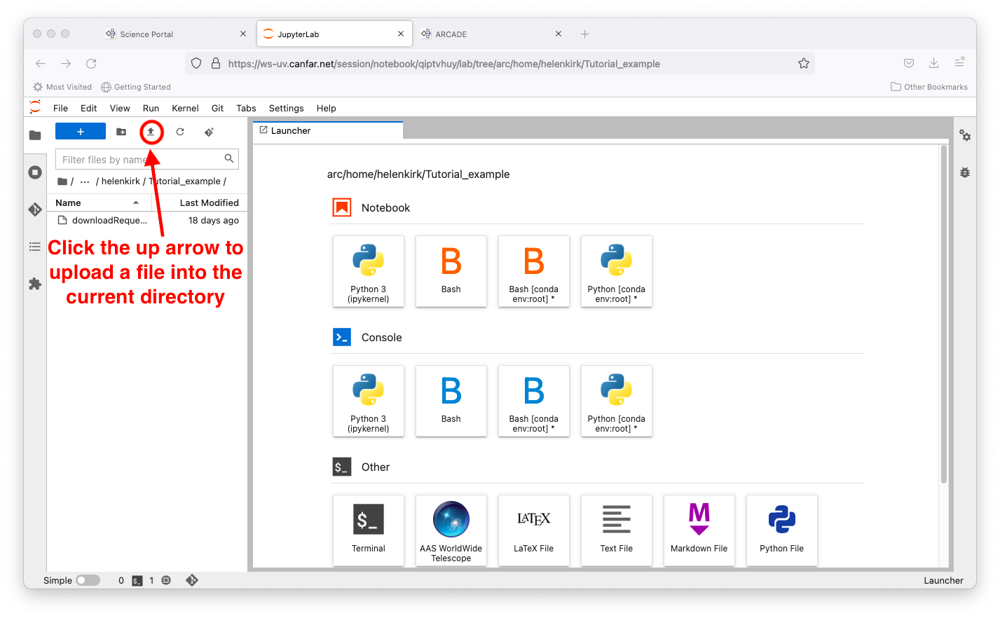
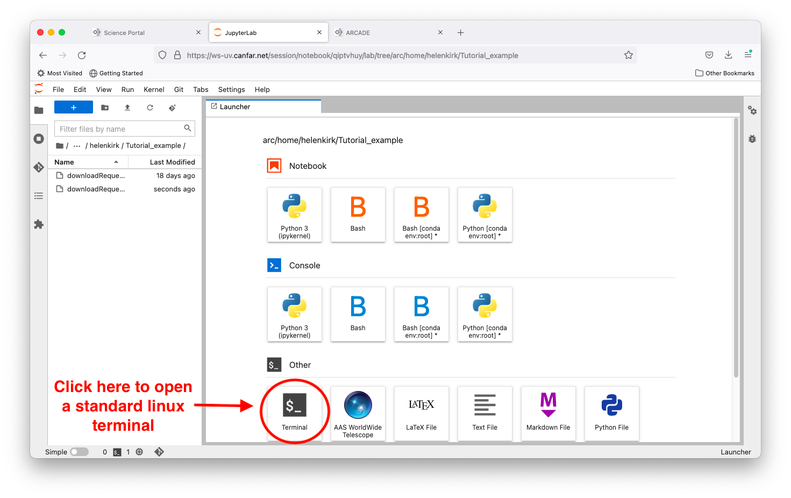
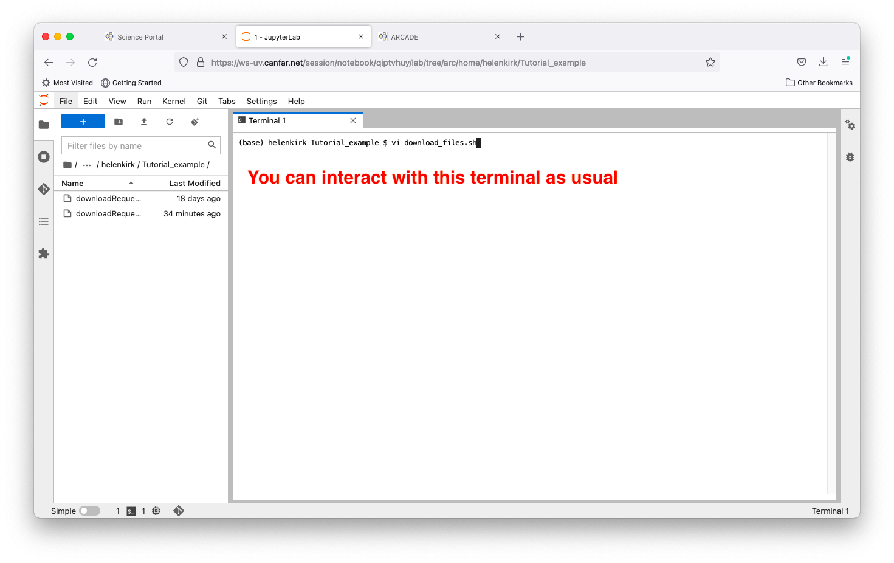

Transfer File Into Notebook Session¶
Smaller files can be uploaded into a Notebook session easily in two different ways. These are outlined in turn below.
Directly Upload the File¶
Once you have navigated into your directory of interest using the browser in the left-hand side, click the upward-pointing arrow on the top menu bar.

This will bring up a window that will let you select the file you wish to upload. Click the ‘Open’ button as usual to confirm your choice of files.

Success! Your file is now visible in the browser, and would also be accessible in the same location in a Desktop or a CARTA session.

Copy-Paste Text¶
Alternatively, you can copy and paste text directly into a a file within your Notebook session. This might be prefered if, for example, you want to copy a snippet of code into an already existing file in your session. Start by opening up a terminal by double-clicking on the icon.

This opens a terminal on the right hand side of the screen which you can interact with as usual. In the example shown, the text editor vi is being initiated on the command line.

On your local computer, you would select and copy the text of interest.

You can then paste this text into a text editor in the terminal.

Once the file is saved, it is accessible from the file browser in the current directory, and would be visible in a Desktop or a CARTA session as well.